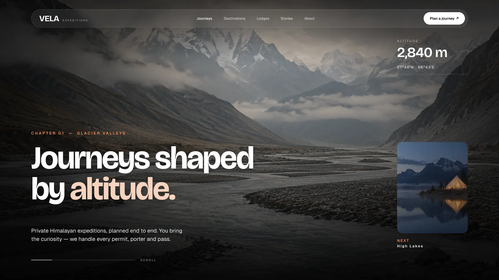
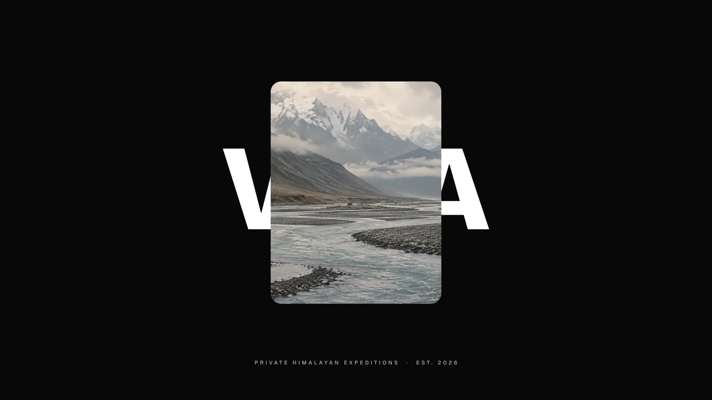
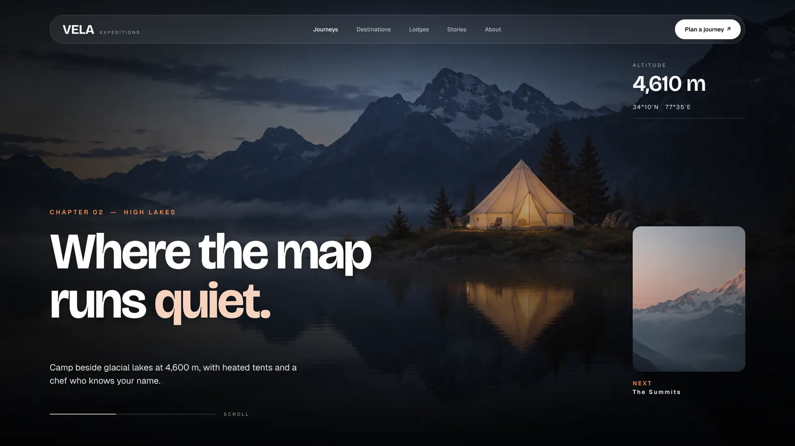
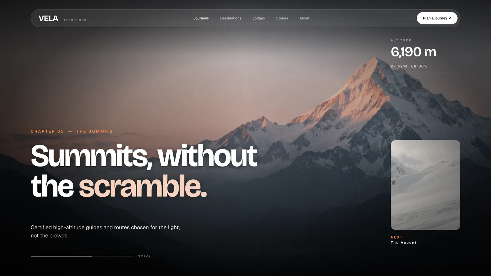
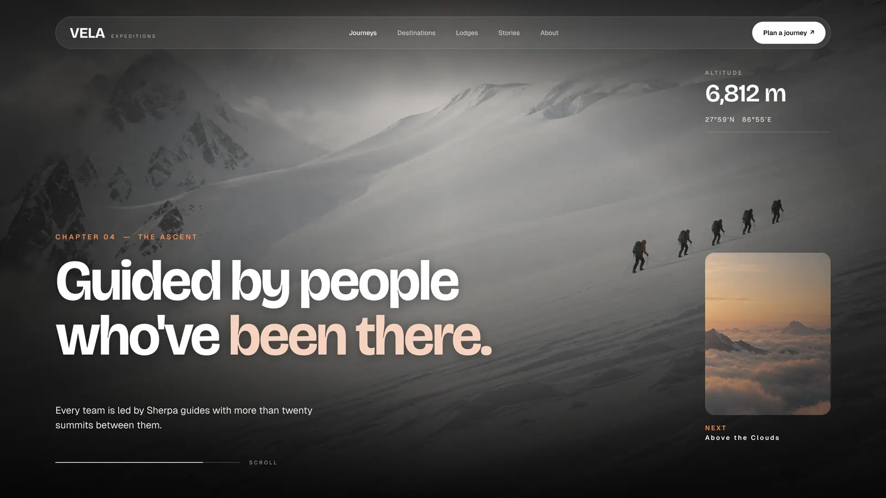
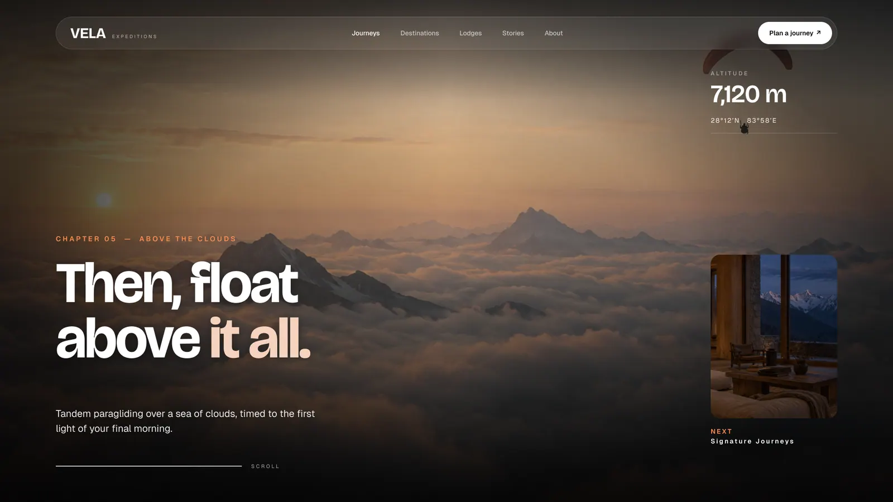
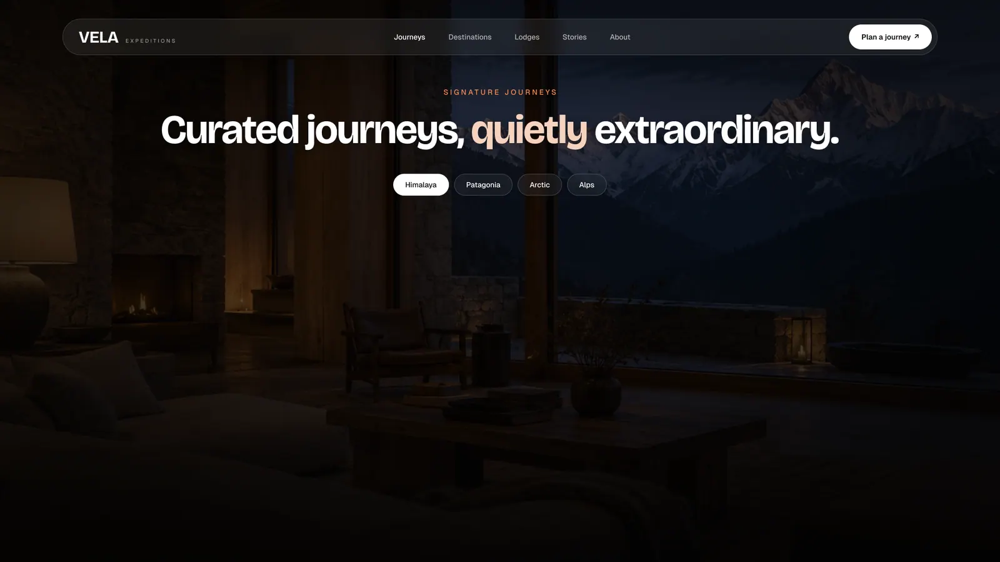
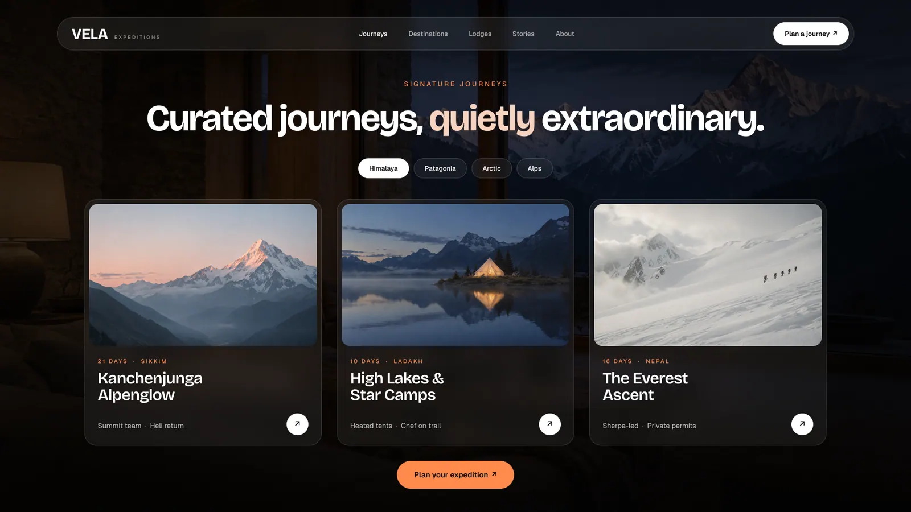
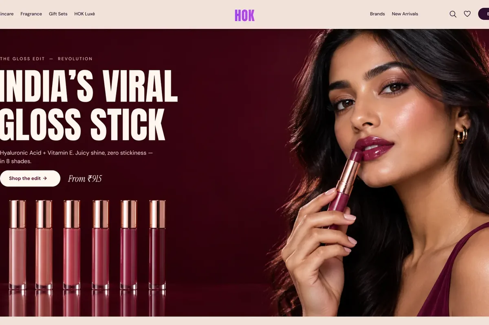

VELALuxury travel website
Journeys shaped by altitude. - Luxury travel website UI/UX case study
A cinematic travel site that climbs from glacier valleys to above the clouds as you scroll.

01Overview
A cinematic travel site that climbs from glacier valleys to above the clouds as you scroll.
VELA is a concept website for a luxury mountain travel company. I designed and animated eight frames in Figma: an intro, five destination scenes ordered by altitude and a curated journeys section that settles into bookable cards.
02The challenge
What had to be solved
Luxury travel is sold on feeling, but most travel sites start with search boxes and filters. VELA needed to make people want to go before asking them to choose.
Design goals
- Tell a story with altitude as the guide
- Keep text short and cinematic
- End on clear, bookable journeys
- Make transitions feel like travelling
03Process
How I approached it
- Altitude as narrativeScenes rise from valleys to lakes, summits and above the clouds, each with its height.
- Short linesOne headline per scene: "Where the map runs quiet."
- Smooth transitionsImages and text glide between frames with Smart Animate.
- Journeys to bookThe story ends in three curated journey cards.
04Intro
An entrance worth waiting for.
The VELA wordmark opens to reveal the first scene.

05Altitude scenes
From glacier valleys to above the clouds.
Five scenes, each with an altitude marker, a short line and a matching image.




06Curated journeys
Curated journeys, quietly extraordinary.
Journey cards arrive and settle, ready to explore and book.


07Decisions
Key design decisions
The changing altitude number tells visitors how far into the story they are.
Each scene says one thing, letting the photography do the rest.
Deep shadows and warm highlights give a premium, filmic feel.
08Design system
Visual language
Dark cinematic tones with warm sunset accents, white type and minimal UI chrome.
TypeClean modern sans-serif
09Outcome
What was delivered
VELA turns a travel website into a short film that climbs through five altitudes and ends with three journeys ready to book.
If the project continues, next I would:
- Design journey detail pages
- Add enquiry and booking
- Build with scroll-linked video
Next project
HOK BeautyBeauty without borders.View project